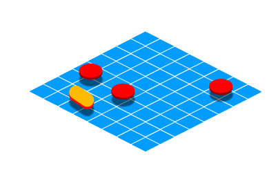
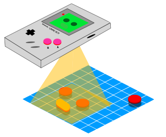

Main idea: Visuals
In the gameboy, there are two important graphical elements - tiles, and sprites.
Tiles are square pixel art images, intended to be laid together in order to make a background for a game. These tiles are organized into groups called 'tilemaps' and then Sprites are drawn on top of these maps to create the impression of an object or character existing in a world.

The gameboy (using some strategies with memory we will discuss later) views a segment of the map and displays it on screen. The designer may choose to make the map bigger than the visual field of the gameboy screen, this can be used to create scrolling effects by slowly moving the perspective of the screen across the tilemap.

<- Back to GameBoy Tutorials